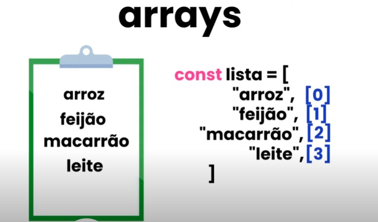
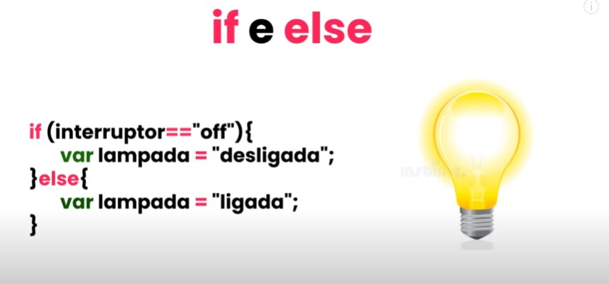

JAVASCRIPT
Aula 1
Linguagem da programação usada para adicionar interatividade nos sites
- Ações quando botões são pressionados
- Validações em formulários
- mudanças dinâmicas na página
- Animações
- E mais
Os arquivos são salvos como "arquivo.js"
JavaScript SEMPRE está atrelado ao HTML
JavaScript NÃO É Java
Existe JavaScript Interno e JavaScript Externo (que nem no CSS)
Geralmente, o JavaScript é colocado no final da página, antes do fechamento do body (não é que nem CSS que lê no
head) (renderizado por último para garantir que funções vão modificar o html que vem antes) (o + lento para
carregar e o último a ser lido)
Inserção de javascript externo: script src="fonte do js"
Aula 2 - Tipos de saída do JavaScript
Saída = maneira de exibir informação
InnerHTML (alimentar o texto pro js) = document.getElementById("id do elemento").innerHTML="texto pretendido"
alert(mensagem) = alerta em caixa separada
console.log("texto") = parecido com alerta, mas somente no console (F12 - Console)
document.write = document.write("texto") (suado mais com finalidade de teste)
No Javascript, a presença de maiúscula FAZ DIFERENÇA
Ideal sempre colocar ; no final do comando JS
Aula 3 - Declarações
Programa de computador = lista de instruções para o computador (instruções = declarações)
Antigamente, o JS só rodava em navegador; hoje, o "motor" do JS pôde ser extraído, o que deu origem ao NODE.JS
JS = lista de declarações interpretada pelo computador
Valores
Operadores
Expressões
Funções
Comentários
etc.
Sintaxe de JS = a forma como o código deve ser escrito
Divisão entre declarações = ; (não é necessário, mas é recomendado [por organização e convenção para as outras
linguagens])
Espaço em branco não significa nada (escrever com espaço é igual escrever sem)
JS aceita quebra de linha (cuidado, algumas linguagens não permitem - mantenha o hábito de linha única)
function minhafuncao(){série de declarações JS}
Comandos
- Break
- Continue
- Debugger
- do
- for
- function
- if
- Else
- return
- Twitch
- try
- catch
- Var
- let
- Entre outros
Aula 4 - Sintaxes
Toda linguagem de programação tem uma sintaxe
Podem haver diferentes conteúdos no JS (texto, número, decimais, etc.)
EX: console.log("texto por causa das aspas") & console.log(5+5 - número por não ter aspas)
Variáveis = armazenam valores de dados (var let const - AULA 6)
Também usa operadores aritiméticos (+, -, /, *, etc.)
Operadores de atribuição = atribuem valor à variável (sinal de = )
Java é sensível a maiúsculo e minúsculo (Case Sensitive) = vai ler aspectos com maiúscula como diferentes (EX:
Pessoa/PESSOA/pessoa são diferentes no JS) - regra inclui variáveis
NÃO SE USA HÍFEN NO JS (só pra subtração)
Alternativas
- Camel Case no lugar (Capitalize)
- Underline
Aula 5 - Comentários
1 linha = // (a que pende pro lado direito/a do teclado numérico)(não precisa de fechamento)
+ de 1 linha = /* (começo) & */ (final)
Aula 6 - Var, Let & Const
Variáveis = "recipientes" para armazenar informações que podem variar (podem ter qualquer valor)
3 palavras-chave para declarar variáveis
- var
- let
- const
As variáveis podem receber qualquer nome (tipo as classes do CSS) E recebem qualquer valor que você queira passar
O JS lê as variáveis de acordo com as definições destas (se falar que dentro da var pote tem Bombom e der um
alert(pote), ele vai dizer "Bombom")
É mais simples definir as variáveis primeiro e depois, na linha de código, só repetir os valores sem repetir o
var para cada um indivivualmente (EX: var a,b,c [declaração de variáveis]; a=x; b=y; c=z;[atribuição de
valores])
Declaração de variável sempre vem indefinida (undefined)
Ordem de atribuição no código também importa (se colocar em uma linha acima que a=2 e em uma abaixo que a=3, o
a=3 será o validado [reatribuição de valor])
Variáveis com letras
Separadas com vírgulas
- Não pode começar com número
- Não pode ter espaços entre um e outro (Camel Case ou Underline)
- Não pode usar palavra-chave de uso do próprio JS
Para colocar espaço, precisa ter (nome da var + " " + nome da outra var) (dá pra colocar no nome de alguma das
var também)
Concatenação de palavras (juntar várias variáveis em uma só)
Misturar palavras (strings) e números (numbers) pode complicar (ele entende os números como palavra)
Diferença entre var, let e const
- let (+ usado)
- torna variável única (não pode ser redeclarada - dá erro se tiver 2)
- Pode ser isolado por escopo = {}
- Pode ser alterado dentro dos escopos específicos
- var
- Pode ser redeclarada
- Coringa universal para todo o código (funciona independente de onde esteja e NÃO É ISOLADO POR ESCOPO)
- const = constante (não pode mudar NUNCA)
- O 1º valor vira o universal
- Mesmo itens dentro de caixas (escopos) seguirão SEMPRE esse valor
Aula 7 - Operadores
Usados para:
- Atribuir valores
- Comparar valores
- Executar operações aritiméticas
- etc.
Operadores são os seguintes sinais: + - * / = ++ -- += -= && || etc...
Separados em 6 categorias:
- Operadores Aritiméticos (matemáticos)
- +
- -
- *
- /
- ++ (incremento = acrescenta 1)
- -- (decremento = tira 1)
- Operadores de Atribuição
- =
- += (usada quando quer somar um valor1 com um valor2 E que o resultado depois seja o novo valor1 [valor1
= valor1 + valor2])
- -= (igual ao +=, mas pra subtração)
- /= (igual ao +=, mas para divisão)
- *= (igual ao +=, mas de multiplicação)
- Operadores de Sequência (TEXTO, pois só texto tem sequência)
- Operadores de Comparação (usados em declaração lógica; respondem com verdadeiro ou falso)
- == -> total = (valor1 == valor2); ->valor1 é igual a valor2? (ignora o tipo - se é string ou number)
- === ->Verifica se o valor E o tipo é o mesmo
- != ->ValorX é diferente de ValorY? (ignora o tipo)
- !== (verifica diferença de valor E tipo)
-
< :menor que (valor1 é menor que X?)
- > :maior que (valor1 é maior que X?)
- >= :maior ou igual (valor1 é menor ou igual que X?)
-
<= :menor ou igual (valor1 é maior ou igual que X?)
- Operador Condicional (Ternário) (condição para variável)
- EX: var idade, eleitor; idade = 17; eleitor = (idade < 18)[condição] ? "Não, Eleitor [texto para resposta verdadeira] : Sim, eleitor [texto para resposta falsa];
- Operadores Lógicos
- && = confirma se um valor é uma coisa E outra [dentro de um limite] (EX: idade > 60 E idade < 70) [se não for, marca false, se for, marca verdadeira]
- || = OU [Dá veradeiro se o valor pedido for uma coisa OU outra] (EX: idade === 65 || idade === 72) [se for algum desses 2, é true]
- ! = vai antes do parênteses para indicar que o valor NÃO pode ser o de dentro do parênteses {EX: resultado = !(idade == 65) -> O resultado será FALSE se a idade por 65}
Aula 8 - Funções
Código projetado para executar tarefa específica (você coloca uma entrada e ele te dá uma saída [como em uma fábrica])
" Mini-programas" para fazer uma tarefa
É executada quando "algo" a invoca
COMO ESCREVER: function nome da função(valores de entrada [valor1, valor2]){return valor1 + valor2;}bloco de código [o que acontece]
Para invocar: no lugar de colocar o nome da função, colocar em seguida os parênteses com os valores determinados [EX: soma(10,10)
Encurta o processo de escrever o código (função determinada evita ter que escrever as operações toda vez)
Invocando uma função
onclick="função invocada" = quando clicar, a função será executada
Escrever só o nome da função também a invoca
ATENÇÃO: Se uma var estiver dentro de uma função, ela só funciona daquela forma dentro DESSA função (mas pode ser alterada DENTRO da função)
Aula 9 - Objetos
Variáveis com muitos valores dentro
EX: const carro = {marca:"ford", modelo:"ka", ano:"2015"}
Propriedades = valores dentro de objetos
Objetos podem ter métodos(funções colocadas dentro de propriedade) (EX: carro.partida(); carro.acelerar(); carro.freiar())
Geralmente se usa const para objeto (não tem como mudar; conteúdo fechado)
Dá pra separa os objetos em linhas diferentes
- Objeto literal = quando determinamos suas propriedades
- Existem objetos gerados de forma dinâmica
Para pegar propriedades específicas, basta digitar (objeto.propriedade) ou (objeto["propriedade])
Se for se referir a uma propriedade dentro do objeto em uma função = this.propriedade
Aula 10 - Eventos
Ações disparadas pela interação do usuário na página (promove interatividade e dinâmica)
Eventos + utilizados
- onclick = disparado em click
- ondblclick = disparado em double click
- onmouseover = disparado quando o mouse passa sobre
- onmouseout = disparado quando o mouse sai do elemento
- onmousemove = disparado quando mouse se mexe
- onmouseup = disparado quando clique do botão é liberado
- onmousedown = disparado quando clique do botão for pressionado
- onfocus = disparado quando o elemento está no foco
- Focus = quando a tela está selecionada (EX: textbox piscando)
- onchange = disparado quando tem mudança no conteúdo
- onblur = disparado quando elemento perde o foco
- onkeydown = disparado quando tecla é pressionada
- onkeypress = dispadado quando tecla é pressionada e solta
- onkeyup = disparado quando tecla é solta SOBRE elemento
- onload = disparado quando página acaba de carregar
- Bom para páginas muito pesadas (pode pedir para algo aparecer depois de carregar)
- onresize = disparado quando há redimensionamento de janela
Para conectar div e function - var nome do elemento = document.getElementById("id do elemento").resto da function
append = adicionar
Value = valor dentro do elemento (pode retornar pelo JS)
Limpar texto - especifica o campo (por ID ou o que for) e coloca .value = ""; (vazio)
Aula 11 - Arrays (Matrizes)
Usados para armazenar vários valores em uma única variável
Diferentes de objetos pois o item dos Arrays é encontrado por posição (de 0 em diante) (não por nome)

Em Matrizes, usamos colchetes []
Dá pra criar um "mini banco de dados" em uma única variável
SEMPRE COMEÇA EM 0
- Lista com todos os itens = array literal
- Lista vazia com valores atribuídos fora também funciona
- lista = new Array("item1", "item2", etc.)
- Cada item precisa ter aspas próprias (senão não divide)
- Para mudar item: nomeDaLista[valor] = "Novo nome";
- para ver todos os itens = console.log(nomeDoArray)
- verificar quantia de itens = nomeDaLista.length
- Pegar último item = nomeDaLista.length -1 (ordem reversa - de trás pra frente)
- Acrescentar item em tempo real = nomeDaLista.push("nome do novo item") OU: nomeDaLista[nomeDaLista.length] = "Novo item"
- Se não tiver, dá undefined
- Verificar se variável é matriz: Array.isArray(x)
Aula 12 - Métodos para Arrays
Métodos
- join = troca separador entre itens (nomeDaVar.join(" símbolo "))
- pop = remove último item da matriz (nomeDaVar.pop())
- push = adiciona item no final (nomeDaVar.push ("item novo"))
- shift = remove primeiro item da lista (nomeDaVar.shift())
- unshift = adiciona item no começo (nomeDaVar.unshift("Novo Nome"))
- delete = deleta item selecionado (delete nomeDaVar[0]) (não muda a ordem - mantém 0 inicial, mas ele vira undefined)
- splice = múltiplos valores a uma posição (nomeDaVar.splice(posiçãoDoNovoElemento,quantosElementosSerãoRemovidos, "valoresAdicionados"))
- concat = juntar Arrays (var nomeDaFusão = Array1.concat(Array2, Array3,...))
- slice = cortar parte dos Arrays (var NomeDoArrayCortador = ArrayCortado.slice(posiçãoAPartirDaQualCorta, posiçãoLimiteDaSeleção [não-inclusa, só os atrás dela] - sempre do 0 em diante e os elementos no meio vão pro novo Array))
- sort = Ordena em ordem alfabética (var nomeDaVarOrdenada = varASerOrdenada.sort());
- Para ordenar números = varDosNúmeros.sort(function(a,b){return a-b})
- reverse = inverte ordem alfabética (primeiro coloca sort, depois coloca nomeDaVarASerOrdenada.reverse)
- Para inverter números = varDosNúmeros.sort(function(a,b){return b-a})
- Maior número em Array = function títuloDaFunção(array) {return Math.max.apply(null, array)}; na invocação, coloca títuloDaFunção(nomeDaVarDosNúmeros)
- Menor número em Array = function títuloDaFunção(array) {return.Math.min.apply(null, array)}
- Filtragem de números = var nomeDaVar = varDosNúmeros.filter(funçãoFiltragem); function funçãoFiltragem(value, index, array){return value operador númeroComparativo;}
Aula 13 - If e Else
If = se; Else = Senão

else if = condição meio-termo entre if e else (3ª condicional)
Na prática:
- Validação de formulário: function verificar(){let nomeDaVar = document.getElementById("ID").value; if(nomeDaVar==" "|| nomeDaVar==null){Bloqueio de validação}else{validado}}
Aula 14 - Switch
Usado para realizar diferentes ações com base em diferentes condições no mesmo bloco de verificação
Um "if/else" mais abrangente
switch (expressao){case a: o que acontece break; case b: o que acontece break; case c: o que acontece break; default: o que acontece}
Vale pelo operador === de tipo TAMBÉM (bem literal) (diferente do if com ==)
- Conversão de maiúscula para leitura em minúscula pelo código:expressao = expressao.toLowerCase
Para dias da semana: var nomeDaVariavel = new Date().getDay(); (valor segue padrão dos arrays - domingo=0, segunda=1, etc.)
Aula 15 - Laço de repetição For
Laço = jeito rápido de executar ação repetidamente
for (ponto inicial, condição e o que acontece depois da condição){o que acontece com todos os resultados}
- funciona com variáveis externas (EX: cria uma variável "ano" com new Date().getFullYear(); e insere no código pra não precisar ficar mudando o ano no site - se atualiza automático)
Aula 16 - SetTimeout e SetInterval
Evento de tempo = permite execução do código em intervalos de tempo definidos (intervalos = eventos de cronometragem)
- setTimeout (function, tempo em milliseconds) - executa função depois de espera de milissegundos
- setInterval (function, milliseconds) - igual Timeout, mas repete a função continuamente
Para referência: 1000ms = 1s
Muito cuidado na digitação dos códigos, a falta de um ; ou , ou ) faz diferença
Para parar contagem: definir var geral (qualquer nome), conectá-la ao setTimeout e criar nova function com clearTimeout(nome da var geral)
parseInt = transforma texto em número
Contagem regressiva = começa em número maior e reduz ao invés de acrescentar (condicional if=0 para parar a contagem)
Aula 17 - Classes
Conceito novo no JS ("funções especiais" para fabricação de objetos)
constructor() para construir os objetos
class nomeDaClasse{constructor(valor1,valor2,valor3){this.propriedade1 = valor1; this.propriedade2 = valor2; this.propriedade3 = valor }
Para construir: var nomeDaVar = new nomeDaClasse(novoValor1, novoValor2, novoValor3) = assim ele pode ser invocado com os devidos valores
É convenção nomeDeClasse com 1ª letra maiúscula e CamelCase ou underline
Para itens específicos: (nomeDaVar.valor1,2,3,...)
Métodos também podem ser aplicados
- Para reconhecer qual var executou o método: return this.propriedade + "reconhecimento do método
Para mudar valor de propriedade na var: nomeDaVar.propriedade = novoValor (abaixo do código, senão o que será lido será o valor antigo)
A ORDEM NO CÓDIGO SEMPRE IMPORTA (não tem como construir o carro sem ter a fábrica antes) (exceção à regra:functions)
Aula 18 - Manipulação de Datas
Objeto Date: var nomeDaVar = new Date() - comando Básico
- getFullYear() = ano completo (4 dígitos)
- getMonth() = mês (números de 0 até 11 - 0=janeiro; 1=fevereiro, etc.)
- Para deixar escrito = matriz com o nome dos meses e var = matrizDosMeses[data.getMonth()];
- getDate() = pegar dia do mês
- getDay() = pegar dia da SEMANA (de 0 a 6 - esquema de matriz) (mesmo esquema pra ordenar corretamente)
- getHours() = pegar a hora
- getMinutes() = pegar minutos
- getSeconds() = pegar segundos
- getMilliseconds() = pegar milisegundos
- toLocaleString('pt-BR') = data no padrão brasileiro (dia/mês/ano)
- Caso não queira as horas: ('pt-BR' {dateStyle: 'short'});
- Caso queira só as horas:('pt-BR' {timeStyle: 'short'});
É possível pegar os valores separadamente também para juntá-los em seguida (var dataPadraoBR = diaMes + "/" + mes + "/" + ano) (todos esses valores PRÉ-ESTABELECIDOS COM OS CÓDIGOS ACIMA)
- Para consertar os valores, na var do mês, só colocar getMonth() + 1; a falta do zero na data se conserta com uma função externa: addZero(x) {return x < 10 ? '0' + x : '' + x;} e addZero(mes)
Comparar datas:
- var hoje = new Date() - hoje
- var vencimento = new Date (2022, 0, 15) - em ordem ano, mês(matriz) e dia
- if(hoje > vencimento){mensagem conforme a preferência}else{outra mensagem de preferência}
Diferença entre duas datas
- Definir data Inicial e data Final
- Iniciar var da diferença do tempo = dataFinal.getTime() - dataInicial.getTime();
- Arredondar pra dias: var diferença em dias = Math.ceil [arredondar](var de diferença do tempo / (24 * 60 * 60 * 1000)); - conversão de milisegundos em dias
Aula 19 - JSON
JSON = JavaScript Object Notation = notação de objetos
Conversão de texto em objeto, e vice-versa
Transmissão de dados entre sistemas de forma simples
2 métodos
- JSON.parse() - converte texto em objeto
- JSON.stringify() - coverte objetos em texto
new XMLHttpRequest() = fazer requisição de site sem precisar acessar o site (acesso remoto ao site)
É possível extrair a informação específica desejada depois de converter (EX: converte um site que tem uma matriz chamada ddd e depois pede a var convertida.ddd
EXTRAS
Para inserir um código html no js, acrescente acento agudo `aqui no meio vem o código`
- Para inserir valor externo dentro deste = ${valor}
Esvaziar caixa após uso = input.value = ""
.focus() = volta o foco para o alvo da função
addEventListener = Sistema se atenta ao evento listado
As teclas no teclado tem uma numeração específica (enter = 13, por exemplo)